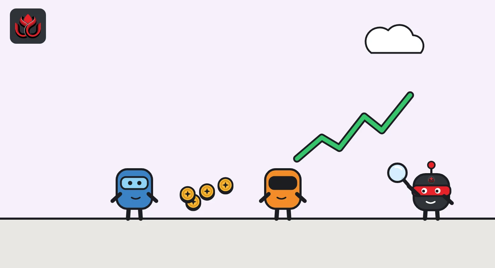

Variational will give users 32% of VAR, fully unlocked. Why did the launch slip to Q4?
The derivatives protocol behind the zero-fee Omni app, backed by a $50 million Dragonfly-led round, pushed its token launch to Q4 2026, citing unnamed partnerships. Points farmers are still earning 150,000 points a week.
Key points
- Variational pushed its VAR token launch to Q4 2026, citing major partnerships it would not name. No date has been set.
- Users get 32% of VAR as an airdrop, fully unlocked at launch. Team and investors hold 50%, locked for a year.
- Points keep paying out at 150,000 a week until launch, and the protocol treasury passed $12 million in USDC on October 31.
The delay
Variational, a derivatives trading protocol that raised about $50 million in a Dragonfly-led round, said on September 24, 2026, that its VAR token will launch in Q4 2026, later than planned. It also said 32% of the supply will go to users, fully unlocked from day one. The launch is called a token generation event (TGE), the moment a project's token is created and starts to circulate. The project published its token plan in a post on X.
Variational had planned to finish its points program at the end of Q3 and launch VAR shortly after. It said it was pushing that back because of major strategic partnerships that would change its direction. It did not name the partners and said it was limited in what it could share.
No exact date was set. As of November 2, 2026, Variational's X account had not announced a TGE date, based on the posts we could see. Its pinned post was still the September 24 announcement.
What Variational is
Variational describes itself as a peer-to-peer protocol for trading, clearing and settling perpetuals and other derivatives. Perpetual futures, or perps, are leveraged bets on an asset's price with no expiry date. Its main consumer app is Omni, which charges zero trading fees, according to the company. A second app, Pro, serves institutions that want custom over-the-counter derivatives, DefiLlama's protocol page notes.
Variational's X profile says users can trade crypto, stocks, commodities and indices on-chain, with more than 550 markets. In its May funding release, the company said it had processed more than $200 billion in trading volume.
At the time of the TGE announcement, Omni was in private beta. Variational said that in the final weeks before the TGE it would end the private beta, open Omni on public mainnet, expand its swaps offering, publish a trading API and share details on VAR buybacks and token utility.

Who gets the VAR supply
VAR supply is split three ways, according to Variational:
- 50% to team and investors, locked for 12 months after TGE and then unlocking over at least three years. Team members also have individual vesting. The split between team and investors will be shared before TGE.
- 32% to the genesis distribution, airdropped in proportion to points and 100% unlocked at TGE. Unclaimed tokens will be burned.
- 18% to an ecosystem reserve held by the Variational Foundation and allocated at its discretion.
On funding, Variational announced a Series A of about $50 million on May 20, 2026, led by Dragonfly, with Bain Capital Crypto and Coinbase Ventures taking part, its press release said.
The project also says it intends to use 100% of the revenue directed to its treasury to buy and burn VAR. On October 31, Variational said its protocol treasury had crossed $12 million in USDC holdings.
VAR supply split
% of total VAR supply
How the points work
The airdrop is tied to Variational's points program. The project issues a fixed 150,000 points each week across all users and says this will continue until the TGE. Any account with at least one point can sign the VAR terms of service and receive part of the genesis distribution, Variational said.
A fixed weekly amount means each user's share depends on how active everyone else is. Late joiners compete for the same weekly pool as early ones. The total number of points at the TGE also depends on how many weeks pass before launch, which is one reason the exact date matters to people farming points.
The airdrop has no cliff or vesting, meaning no waiting period before the tokens can be sold. Variational has not published a spending schedule for the 18% ecosystem reserve.
Timeline
Variational announces a $50 million Series A led by Dragonfly
Original plan to end points program, missed
Variational sets the VAR TGE for Q4 2026 and publishes tokenomics
Variational says its treasury has passed $12 million in USDC
Expected TGE and genesis airdrop
What could go wrong
- Unlocked airdrop at launch. A fully liquid 32% on day one can mean heavy selling by points farmers.
- Date still open. The TGE has already slipped once, and the partnerships behind the delay have not been named.
- Buybacks are an intention. Variational says it intends to use treasury revenue for buybacks, but details on amounts and timing have not been published, and a zero-fee platform has to earn revenue in other ways.
- Product access. Omni was in private beta when the token plan was published, so the activity behind the points is hard to judge from outside.
LC Insight analysis
This section is our reading of the facts above, not a statement of fact.
- A 32% airdrop with no lockup is generous. It puts a big share of supply in users' hands on day one, which is good for decentralization and also an invitation to sell.
- The one-year lockup for team and investors is the counterweight. The first year of trading will be shaped by community holders, not insiders.
- Revenue is the open question. A zero-fee platform promising treasury revenue for buybacks needs a clear income source. The $12 million treasury is a start, but Variational has not explained how it earns.
What's next
- An exact VAR TGE date and exchange list
- Disclosure of the strategic partners behind the delay
- Omni moving from private beta to public mainnet
- Published details on VAR buybacks and token utility
Disclaimer. This article is based on public information and the sources listed below as of the update time shown. It is for information only and is not investment, legal or tax advice. Figures may change as companies and authorities publish new data.